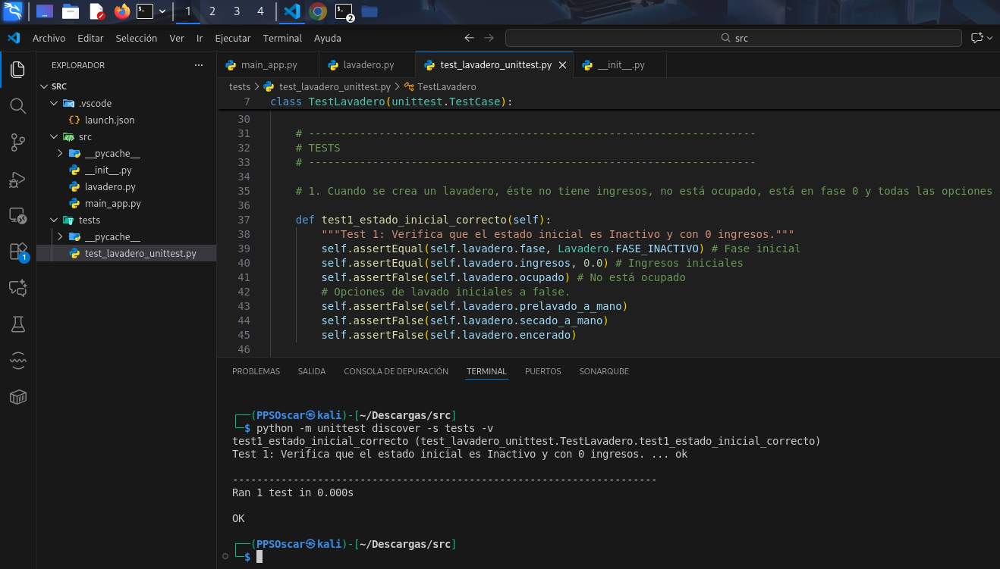
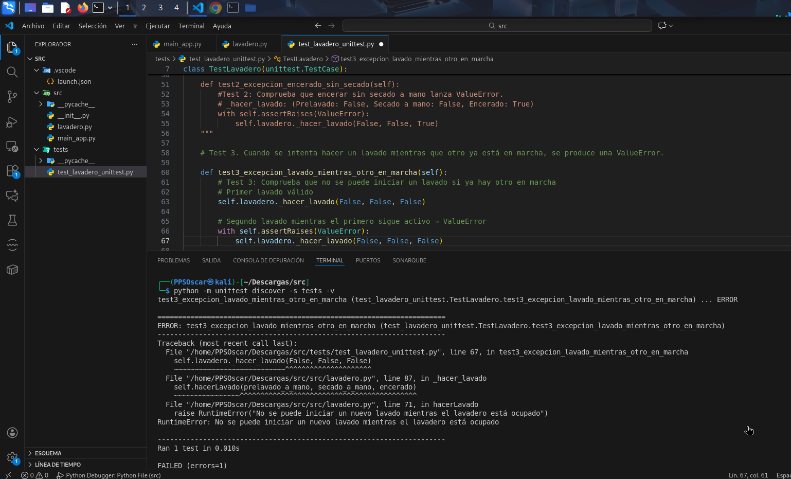
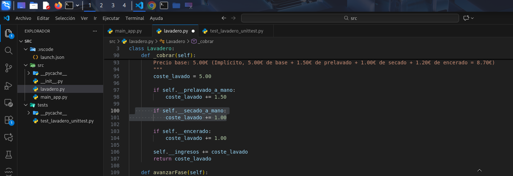
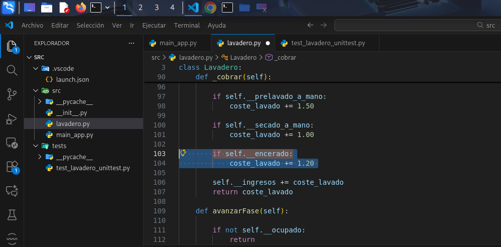
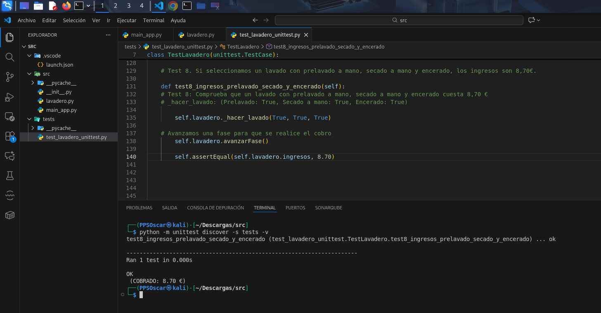
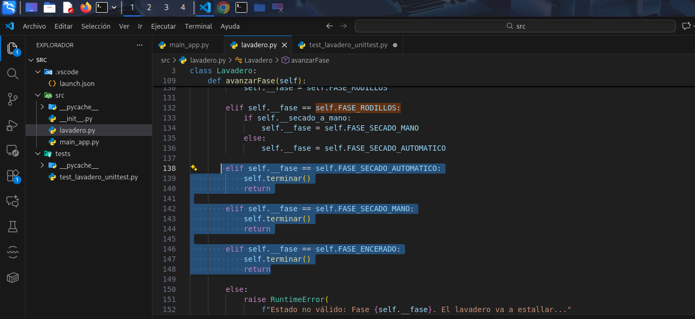
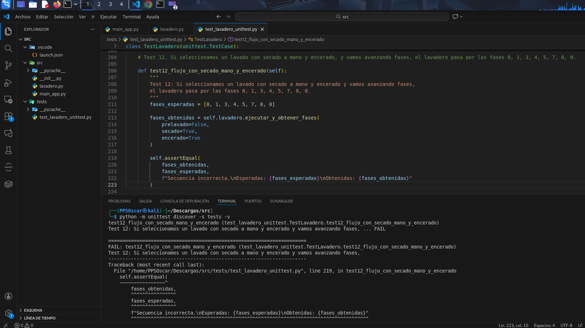

Pruebas
En este apartado muestro, en orden, la realización de los diferentes tests y su ejecución. También se muestra la corrección de errores de aquellos que los contengan.
1. Tests
- Tests 1: Cuando se crea un lavadero, éste no tiene ingresos, no está ocupado, está en fase 0 y todas las opciones de lavado (prelavado a mano, secado a mano y encerado) están puestas a false.

Errores: Este test no muestra errores.
- Test 2: Cuando se intenta comprar un lavado con encerado pero sin secado a mano, se produce una ValueError.

Errores: El test intenta llamar a _hacer_lavado, pero este método no existe en la clase Lavadero.
AttributeError: 'Lavadero' object has no attribute '_hacer_lavado'
Did you mean: 'hacerLavado'?
Solución: Añadir _hacer_lavado a lavadero.py

Ejecución tras solucionar error:

- Test 3: Cuando se intenta hacer un lavado mientras que otro ya está en marcha, se produce una ValueError.

Errores: El enunciado dice ValueError, no RuntimeError.
if self.__ocupado:
raise RuntimeError("No se puede iniciar un nuevo lavado mientras el lavadero está ocupado")
Solución: Cambiar el tipo de excepción.

Ejecición tras soluiconar el error:
{kind=link}
- Tests 4: Si seleccionamos un lavado con prelavado a mano, los ingresos de lavadero son 6,50€

Errores: Este test no muestra errores.
- Test 5: Si seleccionamos un lavado con secado a mano, los ingresos son 6,00€.

Errores: El coste del lavado está a 1.20, por lo que 5.00 + 1.20 = 6.20.
if self.__secado_a_mano:
coste_lavado += 1.20
Solución: Cambiar el precio del secado a mano.

Ejecución tras soluiconar el error:
{kind=link}
- Test 6: Si seleccionamos un lavado con secado a mano y encerado, los ingresos son 7,20€.

Errores: El coste del encerado tiene que ser 1.20€, no 1.00€
if self.__encerado:
coste_lavado += 1.20
Solución: Cambiar el precio del secado a mano.

Ejecución tras soluiconar el error:
{kind=link}
- Test 7: Si seleccionamos un lavado con prelavado a mano y secado a mano, los ingresos son 7,50€.

Errores: Este test no muestra errores.
- Test 8: Si seleccionamos un lavado con prelavado a mano, secado a mano y encerado, los ingresos son 8,70€.

Errores: Este test no muestra errores.
- Test 9: Si seleccionamos un lavado sin extras y vamos avanzando fases, el lavadero pasa por las fases 0, 1, 3, 4, 5, 6, 0.

Errores: El método avanzarFase continuaba evaluando estados tras finalizar el lavado. No se retorna.
elif self.__fase == self.FASE_RODILLOS:
if self.__secado_a_mano:
self.__fase = self.FASE_SECADO_MANO
else:
self.__fase = self.FASE_SECADO_AUTOMATICO
elif self.__fase == self.FASE_SECADO_AUTOMATICO:
self.terminar()
return
elif self.__fase == self.FASE_SECADO_MANO:
self.terminar()
return
elif self.__fase == self.FASE_ENCERADO:
self.terminar()
return
Solución: Añadir return tras terminar()

Ejecución tras soluiconar el error:
{kind=link}
- Test 10: Si seleccionamos un lavado con prelavado a mano y vamos avanzando fases, el lavadero pasa por las fases 0, 1, 2, 3, 4, 5, 6, 0.

Errores: Este test no muestra errores.
- Test 11: Si seleccionamos un lavado con prelavado a mano y vamos avanzando fases, el lavadero pasa por l>

Errores: Este test no muestra errores.
- Test 12: Si seleccionamos un lavado con secado a mano y encerado y vamos avanzando fases, el lavadero pasa por las fases 0, 1, 3, 4, 5, 7, 8, 0.

Errores: La fase 8 (encerado) está siendo saltada.
elif self.__fase == self.FASE_SECADO_MANO:
self.terminar()
return
Solución:

Ejecución tras soluiconar el error:
{kind=link}
- Test 13: Si seleccionamos un lavado con prelavado a mano, secado a mano y encerado, y vamos avanzando fases, el lavadero pasa por las fases 0, 1, 2, 3, 4, 5, 7, 8, 0.

Errores: Este test no muestra errores.
- Test 14: Si seleccionamos un lavado con prelavado a mano, secado a mano y encerado, y vamos avanzando fases, el lavadero pasa por las fases 0, 1, 2, 3, 4, 5, 7, 8, 0

Errores: Este test no muestra errores.
2. Código corregido
Muestro el código completo corregido como resultado de este apartado:
- lavadero.py
# lavadero.py
class Lavadero:
"""
Simula el estado y las operaciones de un túnel de lavado de coches.
Cumple con los requisitos de estado, avance de fase y reglas de negocio.
"""
FASE_INACTIVO = 0
FASE_COBRANDO = 1
FASE_PRELAVADO_MANO = 2
FASE_ECHANDO_AGUA = 3
FASE_ENJABONANDO = 4
FASE_RODILLOS = 5
FASE_SECADO_AUTOMATICO = 6
FASE_SECADO_MANO = 7
FASE_ENCERADO = 8
def __init__(self):
"""
Constructor de la clase. Inicializa el lavadero.
Cumple con el requisito 1.
"""
self.__ingresos = 0.0
self.__fase = self.FASE_INACTIVO
self.__ocupado = False
self.__prelavado_a_mano = False
self.__secado_a_mano = False
self.__encerado = False
self.terminar()
@property
def fase(self):
return self.__fase
@property
def ingresos(self):
return self.__ingresos
@property
def ocupado(self):
return self.__ocupado
@property
def prelavado_a_mano(self):
return self.__prelavado_a_mano
@property
def secado_a_mano(self):
return self.__secado_a_mano
@property
def encerado(self):
return self.__encerado
def terminar(self):
self.__fase = self.FASE_INACTIVO
self.__ocupado = False
self.__prelavado_a_mano = False
self.__secado_a_mano = False
self.__encerado = False
def hacerLavado(self, prelavado_a_mano, secado_a_mano, encerado):
"""
Inicia un nuevo ciclo de lavado, validando reglas de negocio.
:raises RuntimeError: Si el lavadero está ocupado (Requisito 3).
:raises ValueError: Si se intenta encerar sin secado a mano (Requisito 2).
"""
if self.__ocupado:
raise ValueError("No se puede iniciar un nuevo lavado mientras el lavadero está ocupado")
if not secado_a_mano and encerado:
raise ValueError("No se puede encerar el coche sin secado a mano")
self.__fase = self.FASE_INACTIVO
self.__ocupado = True
self.__prelavado_a_mano = prelavado_a_mano
self.__secado_a_mano = secado_a_mano
self.__encerado = encerado
def _hacer_lavado(self, prelavado_a_mano, secado_a_mano, encerado):
"""
Método interno utilizado para pruebas unitarias.
Aplica las mismas reglas de negocio que hacerLavado.
"""
self.hacerLavado(prelavado_a_mano, secado_a_mano, encerado)
def _cobrar(self):
"""
Calcula y añade los ingresos según las opciones seleccionadas (Requisitos 4-8).
Precio base: 5.00€ (Implícito, 5.00€ de base + 1.50€ de prelavado + 1.00€ de secado + 1.20€ de encerado = 8.70€)
"""
coste_lavado = 5.00
if self.__prelavado_a_mano:
coste_lavado += 1.50
if self.__secado_a_mano:
coste_lavado += 1.00
if self.__encerado:
coste_lavado += 1.20
self.__ingresos += coste_lavado
return coste_lavado
def avanzarFase(self):
if not self.__ocupado:
return
if self.__fase == self.FASE_INACTIVO:
self._cobrar()
self.__fase = self.FASE_COBRANDO
elif self.__fase == self.FASE_COBRANDO:
if self.__prelavado_a_mano:
self.__fase = self.FASE_PRELAVADO_MANO
else:
self.__fase = self.FASE_ECHANDO_AGUA
elif self.__fase == self.FASE_PRELAVADO_MANO:
self.__fase = self.FASE_ECHANDO_AGUA
elif self.__fase == self.FASE_ECHANDO_AGUA:
self.__fase = self.FASE_ENJABONANDO
elif self.__fase == self.FASE_ENJABONANDO:
self.__fase = self.FASE_RODILLOS
elif self.__fase == self.FASE_RODILLOS:
if self.__secado_a_mano:
self.__fase = self.FASE_SECADO_MANO
else:
self.__fase = self.FASE_SECADO_AUTOMATICO
elif self.__fase == self.FASE_SECADO_AUTOMATICO:
self.terminar()
return
elif self.__fase == self.FASE_SECADO_MANO:
if self.__encerado:
self.__fase = self.FASE_ENCERADO
else:
self.terminar()
return
elif self.__fase == self.FASE_ENCERADO:
self.terminar()
return
else:
raise RuntimeError(
f"Estado no válido: Fase {self.__fase}. El lavadero va a estallar..."
)
def imprimir_fase(self):
fases_map = {
self.FASE_INACTIVO: "0 - Inactivo",
self.FASE_COBRANDO: "1 - Cobrando",
self.FASE_PRELAVADO_MANO: "2 - Haciendo prelavado a mano",
self.FASE_ECHANDO_AGUA: "3 - Echándole agua",
self.FASE_ENJABONANDO: "4 - Enjabonando",
self.FASE_RODILLOS: "5 - Pasando rodillos",
self.FASE_SECADO_AUTOMATICO: "6 - Haciendo secado automático",
self.FASE_SECADO_MANO: "7 - Haciendo secado a mano",
self.FASE_ENCERADO: "8 - Encerando a mano",
}
print(fases_map.get(self.__fase, f"{self.__fase} - En estado no válido"), end="")
def imprimir_estado(self):
print("----------------------------------------")
print(f"Ingresos Acumulados: {self.ingresos:.2f} €")
print(f"Ocupado: {self.ocupado}")
print(f"Prelavado a mano: {self.prelavado_a_mano}")
print(f"Secado a mano: {self.secado_a_mano}")
print(f"Encerado: {self.encerado}")
print("Fase: ", end="")
self.imprimir_fase()
print("\n----------------------------------------")
# Esta función es útil para pruebas unitarias, no es parte del lavadero real
# nos crea un array con las fases visitadas en un ciclo completo
def ejecutar_y_obtener_fases(self, prelavado, secado, encerado):
"""Ejecuta un ciclo completo y devuelve la lista de fases visitadas."""
self._hacer_lavado(prelavado, secado, encerado)
fases_visitadas = [self.fase]
while self.ocupado:
# Usamos un límite de pasos para evitar bucles infinitos en caso de error
if len(fases_visitadas) > 15:
raise Exception("Bucle infinito detectado en la simulación de fases.")
self.avanzarFase()
fases_visitadas.append(self.fase)
return fases_visitadas
- test_lavadero_unittest.py:
# tests/test_lavadero_unittest.py
import unittest
# Importamos la clase Lavadero desde el módulo padre
from src.lavadero import Lavadero
class TestLavadero(unittest.TestCase):
# Método que se ejecuta antes de cada test.
# Es el equivalente del @pytest.fixture en este contexto.
def setUp(self):
"""Prepara una nueva instancia de Lavadero antes de cada prueba."""
self.lavadero = Lavadero()
# ----------------------------------------------------------------------
# Función para resetear el estado cuanto terminamos una ejecución de lavado
# ----------------------------------------------------------------------
"""
def test_reseteo_estado_con_terminar(self):
#Test 4: Verifica terminar() resetea todas las flags y el estado.
self.lavadero._hacer_lavado(True, True, True)
self.lavadero._cobrar()
self.lavadero.terminar()
self.assertEqual(self.lavadero.fase, Lavadero.FASE_INACTIVO)
self.assertFalse(self.lavadero.ocupado)
self.assertFalse(self.lavadero.prelavado_a_mano)
self.assertTrue(self.lavadero.ingresos > 0) # Los ingresos deben mantenerse
"""
# ----------------------------------------------------------------------
# TESTS
# ----------------------------------------------------------------------
# Test 1. Cuando se crea un lavadero, éste no tiene ingresos, no está ocupado, está en fase 0 y todas las opciones de lavado (prelavado a mano, secado a mano y encerado) están puestas a false.
"""
def test1_estado_inicial_correcto(self):
# Test 1: Verifica que el estado inicial es Inactivo y con 0 ingresos.
self.assertEqual(self.lavadero.fase, Lavadero.FASE_INACTIVO) # Fase inicial
self.assertEqual(self.lavadero.ingresos, 0.0) # Ingresos iniciales
self.assertFalse(self.lavadero.ocupado) # No está ocupadoS
# Opciones de lavado iniciales a false.
self.assertFalse(self.lavadero.prelavado_a_mano)
self.assertFalse(self.lavadero.secado_a_mano)
self.assertFalse(self.lavadero.encerado)
"""
# Test 2. Cuando se intenta comprar un lavado con encerado pero sin secado a mano, se produce una ValueError.
"""
def test2_excepcion_encerado_sin_secado(self):
#Test 2: Comprueba que encerar sin secado a mano lanza ValueError.
# _hacer_lavado: (Prelavado: False, Secado a mano: False, Encerado: True)
with self.assertRaises(ValueError):
self.lavadero._hacer_lavado(False, False, True)
"""
# Test 3. Cuando se intenta hacer un lavado mientras que otro ya está en marcha, se produce una ValueError.
"""
def test3_excepcion_lavado_mientras_otro_en_marcha(self):
# Test 3: Comprueba que no se puede iniciar un lavado si ya hay otro en marcha
# Primer lavado válido
self.lavadero._hacer_lavado(False, False, False)
# Segundo lavado mientras el primero sigue activo → ValueError
with self.assertRaises(ValueError):
self.lavadero._hacer_lavado(False, False, False)
"""
# Test 4. Si seleccionamos un lavado con prelavado a mano, los ingresos de lavadero son 6,50€.
"""
def test4_ingresos_prelavado_a_mano(self):
# Test 4: Comprueba que un lavado con prelavado a mano cuesta 6,50 €
# _hacer_lavado: (Prelavado: True, Secado a mano: False, Encerado: False)
self.lavadero._hacer_lavado(True, False, False)
# Avanzamos una fase para que se realice el cobro
self.lavadero.avanzarFase()
self.assertEqual(self.lavadero.ingresos, 6.50)
"""
# Test 5. Si seleccionamos un lavado con secado a mano, los ingresos son 6,00€.
"""
def test5_ingresos_secado_a_mano(self):
# Test 5: Comprueba que un lavado con secado a mano cuesta 6,00 €
# _hacer_lavado: (Prelavado: False, Secado a mano: True, Encerado: False)
self.lavadero._hacer_lavado(False, True, False)
# Avanzamos una fase para que se realice el cobro
self.lavadero.avanzarFase()
self.assertEqual(self.lavadero.ingresos, 6.00)
"""
# Test 6. Si seleccionamos un lavado con secado a mano y encerado, los ingresos son 7,20€.
"""
def test6_ingresos_secado_mano_y_encerado(self):
# Test 6: Comprueba que un lavado con secado a mano y encerado cuesta 7,20 €
# _hacer_lavado: (Prelavado: False, Secado a mano: True, Encerado: True)
self.lavadero._hacer_lavado(False, True, True)
# Avanzamos una fase para que se realice el cobro
self.lavadero.avanzarFase()
self.assertEqual(self.lavadero.ingresos, 7.20)
"""
# Test 7. Si seleccionamos un lavado con prelavado a mano y secado a mano, los ingresos son 7,50€.
"""
def test7_ingresos_prelavado_y_secado_mano(self):
# Test 7: Comprueba que un lavado con prelavado a mano y secado a mano cuesta 7,50 €
# _hacer_lavado: (Prelavado: True, Secado a mano: True, Encerado: False)
self.lavadero._hacer_lavado(True, True, False)
# Avanzamos una fase para que se realice el cobro
self.lavadero.avanzarFase()
self.assertEqual(self.lavadero.ingresos, 7.50)
"""
# Test 8. Si seleccionamos un lavado con prelavado a mano, secado a mano y encerado, los ingresos son 8,70€.
"""
def test8_ingresos_prelavado_secado_y_encerado(self):
# Test 8: Comprueba que un lavado con prelavado a mano, secado a mano y encerado cuesta 8,70 €
# _hacer_lavado: (Prelavado: True, Secado a mano: True, Encerado: True)
self.lavadero._hacer_lavado(True, True, True)
# Avanzamos una fase para que se realice el cobro
self.lavadero.avanzarFase()
self.assertEqual(self.lavadero.ingresos, 8.70)
"""
# ----------------------------------------------------------------------
# Tests de flujo de fases
# Utilizamos la función def ejecutar_y_obtener_fases(self, prelavado, secado, encerado)
# Estos tests dan errores ya que en el código original hay errores en las las fases esperados, en los saltos.
# ----------------------------------------------------------------------
# Test 9. Si seleccionamos un lavado sin extras y vamos avanzando fases, el lavadero pasa por las fases 0, 1, 3, 4, 5, 6, 0.
"""
def test9_flujo_rapido_sin_extras(self):
#Test 9: Simula el flujo rápido sin opciones opcionales.
fases_esperadas = [0, 1, 3, 4, 5, 6, 0]
# Ejecutar el ciclo completo y obtener las fases
fases_obtenidas = self.lavadero.ejecutar_y_obtener_fases(prelavado=False, secado=False, encerado=False)
# Verificar que las fases obtenidas coinciden con las esperadas
self.assertEqual(fases_obtenidas, fases_esperadas,
f"Secuencia de fases incorrecta.\nEsperadas: {fases_esperadas}\nObtenidas: {fases_obtenidas}")
"""
# Test 10. Si seleccionamos un lavado con prelavado a mano y vamos avanzando fases, el lavadero pasa por las fases 0, 1, 2, 3, 4, 5, 6, 0.
"""
def test10_flujo_con_prelavado(self):
#Test 10: Flujo de fases para un lavado con prelavado a mano.
fases_esperadas = [0, 1, 2, 3, 4, 5, 6, 0]
fases_obtenidas = self.lavadero.ejecutar_y_obtener_fases(
prelavado=True,
secado=False,
encerado=False
)
self.assertEqual(
fases_obtenidas,
fases_esperadas,
f"Secuencia de fases incorrecta.\nEsperadas: {fases_esperadas}\nObtenidas: {fases_obtenidas}"
)
"""
# Test 11. Si seleccionamos un lavado con secado a mano y vamos avanzando fases, el lavadero pasa por las fases 0, 1, 3, 4, 5, 7, 0.
"""
def test11_flujo_con_secado_mano(self):
fases_esperadas = [0, 1, 3, 4, 5, 7, 0]
fases_obtenidas = self.lavadero.ejecutar_y_obtener_fases(
prelavado=False,
secado=True,
encerado=False
)
self.assertEqual(
fases_obtenidas,
fases_esperadas,
f"Esperadas: {fases_esperadas} | Obtenidas: {fases_obtenidas}"
)
"""
# Test 12. Si seleccionamos un lavado con secado a mano y encerado, y vamos avanzando fases, el lavadero pasa por las fases 0, 1, 3, 4, 5, 7, 8, 0.
"""
def test12_flujo_con_secado_mano_y_encerado(self):
Test 12: Si seleccionamos un lavado con secado a mano y encerado y vamos avanzando fases,
el lavadero pasa por las fases 0, 1, 3, 4, 5, 7, 8, 0.
fases_esperadas = [0, 1, 3, 4, 5, 7, 8, 0]
fases_obtenidas = self.lavadero.ejecutar_y_obtener_fases(
prelavado=False,
secado=True,
encerado=True
)
self.assertEqual(
fases_obtenidas,
fases_esperadas,
f"Secuencia incorrecta.\nEsperadas: {fases_esperadas}\nObtenidas: {fases_obtenidas}"
)
"""
# Test 13. Si seleccionamos un lavado con prelavado a mano, secado a mano y encerado, y vamos avanzando fases, el lavadero pasa por las fases 0, 1, 2, 3, 4, 5, 7, 8, 0.
"""
def test14_flujo_prelavado_y_secado_mano(self):
fases_esperadas = [0, 1, 2, 3, 4, 5, 7, 0]
fases_obtenidas = self.lavadero.ejecutar_y_obtener_fases(
prelavado=True,
secado=True,
encerado=False
)
self.assertEqual(
fases_obtenidas,
fases_esperadas,
f"Secuencia incorrecta.\nEsperadas: {fases_esperadas}\nObtenidas: {fases_obtenidas}"
)
"""
# Test 14. Si seleccionamos un lavado con prelavado a mano, secado a mano y encerado, y vamos avanzando fases, el lavadero pasa por las fases 0, 1, 2, 3, 4, 5, 7, 8, 0.
def test15_flujo_prelavado_secado_y_encerado(self):
"""
Test 15: Si seleccionamos un lavado con prelavado a mano, secado a mano y encerado
y vamos avanzando fases, el lavadero pasa por las fases
0, 1, 2, 3, 4, 5, 7, 8, 0.
"""
fases_esperadas = [0, 1, 2, 3, 4, 5, 7, 8, 0]
fases_obtenidas = self.lavadero.ejecutar_y_obtener_fases(
prelavado=True,
secado=True,
encerado=True
)
self.assertEqual(
fases_obtenidas,
fases_esperadas,
f"Secuencia incorrecta.\nEsperadas: {fases_esperadas}\nObtenidas: {fases_obtenidas}"
)
# Bloque de ejecución para ejecutar los tests si el archivo es corrido directamente
if __name__ == '__main__':
unittest.main()
- main_app.py:
# main_app.py
# Importar la clase desde el otro archivo (módulo)
from lavadero import Lavadero
# MODIFICACIÓN CLAVE AQUÍ: La función ahora acepta 3 argumentos
def ejecutarSimulacion(lavadero, prelavado, secado_mano, encerado):
"""
Simula el proceso de lavado para un vehículo con las opciones dadas.
Ahora acepta una instancia de lavadero.
:param lavadero: Instancia de Lavadero.
:param prelavado: bool, True si se solicita prelavado a mano.
:param secado_mano: bool, True si se solicita secado a mano.
:param encerado: bool, True si se solicita encerado.
"""
print("--- INICIO: Prueba de Lavado con Opciones Personalizadas ---")
# Mostrar las opciones solicitadas
print(f"Opciones solicitadas: [Prelavado: {prelavado}, Secado a mano: {secado_mano}, Encerado: {encerado}]")
# 1. Iniciar el lavado
try:
# Esto establece las opciones y pasa a Fase 0 (Inactivo, pero Ocupado=True)
lavadero.hacerLavado(prelavado, secado_mano, encerado)
print("\nCoche entra. Estado inicial:")
lavadero.imprimir_estado()
# 2. Avanza por las fases
print("\nAVANZANDO FASE POR FASE:")
# Usamos un contador para evitar bucles infinitos en caso de error o bucles inesperados
pasos = 0
while lavadero.ocupado and pasos < 20:
# El cobro ahora ocurre en la primera llamada a avanzarFase (transición 0 -> 1)
lavadero.avanzarFase()
print(f"-> Fase actual: ", end="")
lavadero.imprimir_fase()
print()
pasos += 1
print("\n----------------------------------------")
print("Lavado completo. Estado final:")
lavadero.imprimir_estado()
print(f"Ingresos acumulados: {lavadero.ingresos:.2f} €")
print("----------------------------------------")
except ValueError as e: # Captura la excepción de regla de negocio (Requisito 2)
print(f"ERROR DE ARGUMENTO: {e}")
except RuntimeError as e: # Captura la excepción de estado (Requisito 3)
print(f"ERROR DE ESTADO: {e}")
except Exception as e:
print(f"ERROR INESPERADO: {e}")
# Punto de entrada (main): Aquí pasamos los parámetros
if __name__ == "__main__":
lavadero_global = Lavadero() # Usamos una única instancia para acumular ingresos
""""
# EJEMPLO 1: Lavado completo con prelavado, secado a mano, con encerado (Requisito 8 y 14)
# Precio esperado: 5.00 + 1.50 + 1.00 + 1.20 = 8.70 €
print("\n=======================================================")
print("EJEMPLO 1: Prelavado (S), Secado a mano (S), Encerado (S)")
ejecutarSimulacion(lavadero_global, prelavado=True, secado_mano=True, encerado=True)
# EJEMPLO 2: Lavado rápido sin extras (Requisito 9)
# Precio esperado: 5.00 €
print("\n=======================================================")
print("EJEMPLO 2: Sin extras (Prelavado: N, Secado a mano: N, Encerado: N)")
ejecutarSimulacion(lavadero_global, prelavado=False, secado_mano=False, encerado=False)
# EJEMPLO 3: Lavado con encerado, pero sin secado a mano (Debe lanzar ValueError - Requisito 2)
print("\n=======================================================")
print("EJEMPLO 3: ERROR (Encerado S, Secado a mano N)")
ejecutarSimulacion(lavadero_global, prelavado=False, secado_mano=False, encerado=True)
# EJEMPLO 4: Lavado con prelavado a mano (Requisito 4 y 10)
# Precio esperado: 5.00 + 1.50 = 6.50 €
print("\n=======================================================")
print("EJEMPLO 4: Prelavado (S), Secado a mano (N), Encerado (N)")
ejecutarSimulacion(lavadero_global, prelavado=True, secado_mano=False)
print("\n=======================================================")
print("EJEMPLO ERROR 2: Intentar iniciar un lavado estando ocupado")
"""
# EJEMPLO ERROR 2: Intentar iniciar un lavado estando ocupado (Requisito 3)
"""
lavadero_error = Lavadero()
try:
# Primer lavado (arranca correctamente)
lavadero_error.hacerLavado(prelavado_a_mano=False,
secado_a_mano=False,
encerado=False)
print("Primer lavado iniciado correctamente")
# Segundo lavado SIN terminar el primero
lavadero_error.hacerLavado(prelavado_a_mano=True,
secado_a_mano=False,
encerado=False)
except Exception as e:
print(f"EXCEPCIÓN CAPTURADA: {type(e).__name__} -> {e}") # Esperado: RuntimeError
"""
# EJEMPLO ERROR 3: Precio incorrecto del secado a mano (Requisito 7)
"""
print("\n=======================================================")
print("EJEMPLO ERROR 3: Precio incorrecto del secado a mano")
lavadero_error3 = Lavadero()
# Lavado SOLO con secado a mano
lavadero_error3.hacerLavado(prelavado_a_mano=False,
secado_a_mano=True,
encerado=False)
# Avanzamos SOLO UNA FASE para que se cobre
lavadero_error3.avanzarFase()
print(f"Ingresos tras el cobro: {lavadero_error3.ingresos:.2f} €")
"""
# EJEMPLO ERROR 4: Fase incorrecta tras rodillos (sin secado a mano) (Requisito 13)
"""
print("\n=======================================================")
print("EJEMPLO ERROR 4: Fase incorrecta tras rodillos (sin secado a mano)")
lavadero_error4 = Lavadero()
# Lavado SIN secado a mano
lavadero_error4.hacerLavado(prelavado_a_mano=False,
secado_a_mano=False,
encerado=False)
# Avanzamos fases manualmente
while lavadero_error4.ocupado:
print(f"Fase actual: {lavadero_error4.fase}")
lavadero_error4.avanzarFase()
print(f"Fase final: {lavadero_error4.fase}")
"""
# EJEMPLO ERROR 5: Fase incorrecta tras rodillos (con secado a mano y encerado) (Requisito 13)
""""
print("\n=======================================================")
print("EJEMPLO ERROR 5: La fase de encerado nunca se ejecuta")
lavadero_error5 = Lavadero()
# Lavado con secado a mano y encerado
lavadero_error5.hacerLavado(prelavado_a_mano=False,
secado_a_mano=True,
encerado=True)
# Avanzamos fases y mostramos todas
while lavadero_error5.ocupado:
print(f"Fase actual: {lavadero_error5.fase}")
lavadero_error5.avanzarFase()
print(f"Fase final: {lavadero_error5.fase}")
"""
"""
# EJEMPLO ERROR 6: Uso de atributo inexistente self.lavadero
print("\n=======================================================")
print("EJEMPLO ERROR 6: Uso de atributo inexistente self.lavadero")
lavadero_error6 = Lavadero()
# Llamamos al método de prueba
lavadero_error6.ejecutar_y_obtener_fases(prelavado=False,
secado=False,
encerado=False)
"""